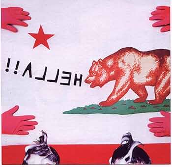

Released: 03/19/2002
Hold Your Horse Is is the debut studio album by American math rock band Hella. It was released in 2002 and is considered highly influential within the math rock and noise rock scenes.